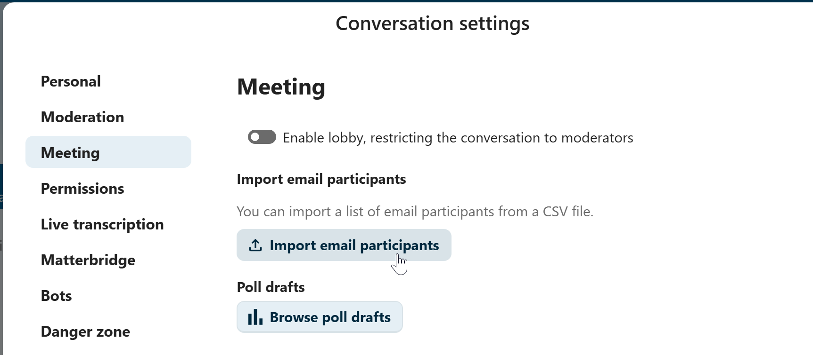

Einem Anruf beitreten oder als Gast chatten
Wenn Sie einen Link zu einer Nextcloud Talk-Konversation erhalten haben, können Sie als Gast ohne Nextcloud-Konto teilnehmen.
Einem Chat beitreten
Wenn Sie einen Link zu einem Chat erhalten haben, können Sie diesen in Ihrem Browser öffnen, um am Chat teilzunehmen. Hier werden Sie vor dem Beitritt aufgefordert, Ihren Namen einzugeben.

Sie können Ihren Namen auch später, durch einen Klick auf die Schaltfläche Bearbeiten oben rechts, ändern.

Ihre Kamera- und Mikrofoneinstellungen finden Sie im Menü Einstellungen. Dort finden Sie auch eine Liste mit Verknüpfungen, die Sie verwenden können.

Einem Anruf beitreten
Sie können einen Anruf jederzeit mit der Schaltfläche Anruf starten beginnen. Andere Teilnehmer werden benachrichtigt und können dem Gespräch beitreten. Wenn jemand anderes bereits einen Anruf gestartet hat, ändert sich die Schaltfläche in eine grüne Schaltfläche Anruf beitreten.

Vor dem Beitritt wird Ihnen eine Geräteabfrage angezeigt, bei der Sie Ihre Kamera und Ihr Mikrofon auswählen, die Hintergrundunschärfe aktivieren oder auch ohne Geräte beitreten können.

Während eines Anrufs finden Sie die Kamera- und Mikrofoneinstellungen im Menü … in der oberen Leiste.

Während eines Anrufs können Sie Mikrofon und Video stummschalten mit den Schaltflächen oben rechts oder mit den Tastenkombinationen M zum Stummschalten von Audio und V zum Deaktivieren von Video. Sie können auch die Leertaste verwenden, um die Stummschaltung zu umzuschalten. Wenn Sie stummgeschaltet sind, können Sie durch Drücken der Leertaste die Stummschaltung aufheben, so dass Sie sprechen können, bis Sie die Leertaste loslassen. Wenn die Stummschaltung aufgehoben ist, werden Sie durch Drücken der Leertaste stummgeschaltet, bis Sie die Leertaste loslassen.
Mit dem kleinen Pfeil über dem Videostream können Sie Ihr Video ausblenden (nützlich bei einer Bildschirmfreigabe). Mit dem kleinen Pfeil können Sie es wieder einblenden.
Vollbild und andere Einstellungen
Im Unterhaltungsmenü können Sie wählen, ob Sie den Vollbildmodus aktivieren wollen. Sie können dies auch mit der Taste F auf Ihrer Tastatur tun. In den Unterhaltungseinstellungen finden Sie Benachrichtigungsoptionen und die vollständige Unterhaltungsbeschreibung.

Als E-Mail-Gast beitreten
Ein Gast kann per E-Mail zu einer Unterhaltung eingeladen werden. Die E-Mail enthält einen Link zur Teilnahme. Klickt der Gast auf den Link, wird er mit einem individuellen Zugriffstoken zur Unterhaltung weitergeleitet.

Eine Einladung kann durch Einfügen der E-Mail-Adresse in das Suchfeld der Registerkarte Teilnehmer erstellt werden.

Sie können mehrere E-Mail-Teilnehmer gleichzeitig einladen, indem Sie eine CSV-Datei hochladen. Diese Option finden Sie in den Konversationseinstellungen im Abschnitt Meeting.
{kind=link}
